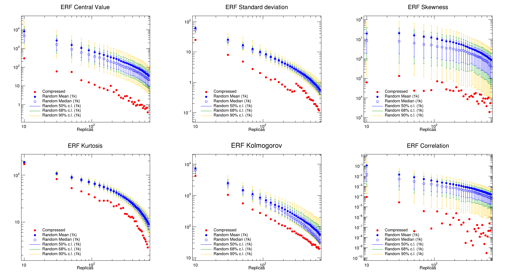

How to use¶
Once the pyCompressor package is installed, runnig a compression is very easy. It just takes an input run card in which all the input parameters are defined. The run card is subdivided into two distincts part: the compression and the GANs parameters.
pycompressor runcard.yml
The compression per-say requires the following keys:
compressed- int : size of the compressed replicas
minimizer- str : name of the minimizer (genetic or cma)
est_dic- dict : dictionary of estimators
The GANs requires has the following keys:
enhance- bool : switch on/off GANs
nbgeng- int : total number of output replicas (this includes the prior)
q- float : initiale at which the PDF grid will be generated
x_grid- str : choose between the built-in GANs grid or the LHAPDF-grid from the PDF file (options: custom or lhapdf)
architecture- str : define the architecture; dcnn for deep convolutional neural network, dnn for deep neural network
g_nodes- int : number of nodes in the first hidden layer for the generator
d_nodes- int : number of nodes in the first hidden layer for the critic/discriminator
g_act- str : name of the activation function for the generator
d_act- str : name of the activation function for the critic/discriminator
d_opt- str : name of the optimizer for the critic/discriminator
gan_opt- str : name of the optimizer for the adversarial
epochs- int : number of epochs
batch_size- int : number of batches per epoch
ng_steps- int : number of intermediate steps to train the generator
nd_steps- int : number of intermediate steps to train the critic/discriminator
An example of run card is shown below:
# pyCompressor input parameters
pdf: PN3_GLOBAL_NNPDF31_nnlo_as_0118_070219-001
compressed: 50
minimizer: genetic
est_dic:
corr_estimators:
- correlation
stat_estimators:
- kolmogorov_smirnov
moment_estimators:
- mean
- stdev
- skewness
- kurtosis
# GANs input parameters
enhance : True
nbgen : 1000
q : 1.65
x_grid : custom
architecture: dcnn
g_nodes : 256
d_nodes : 128
g_act : leakyrelu
d_act : leakyrelu
d_opt : rms
gan_opt : rms
epochs : 5000
batch_size : 32
nd_steps : 4
ng_steps : 3
If enhance is set to True, the code will first enhance the statistic the prior using GANs.
+-------------------------------------------------------------------------+
|𝖌𝖆𝖓𝖕𝖉𝖋𝖘: |
|------- |
|Generative Adversarial Neural Networks (GANs) for PDF replicas. |
|https://n3pdf.github.io/ganpdfs/ |
|© N3PDF |
+-------------------------------------------------------------------------+
Once the generation of the extra-replicas is finished, the output grids are evolved using
evolven3fit.
Then, the pyCompressor.postgans module (in a similar fashion as postfit) creates a
symbolic link of both the original and the generated PDF sets into the LHAPDF data directory.
The new enhanced Monte Carlo set of PDF replicas is then used as input to the compressor.
Once the compression is finished, a folder is created in the main directory with the folowing
structure
<PDF_NAME>_enhanced
├── checkpoint
│ ├── checkpoint
│ ├── ckpt-1.data-00000-of-00001
│ └── ckpt-1.index
│ └── ...
├── filter.yml
├── input-runcard.json
├── iterations
│ └── pdf_generated_at_<ITERATION>.png
│ └── ...
├── losses_info.json
├── nnfit
│ ├── <PDF_NAME>_enhanced.info
│ ├── replica_<REPLICA_INDEX>
│ │ ├── <PDF_NAME>_enhanced.dat
│ │ └── <PDF_NAME>.exportgrid
│ └── ...
└── compress_<PDF_NAME>_enhanced_<NB_COMPRESSED_REPLICAS>_output.dat
where:
checkpoint stores the evolution of the GANs training. In case a long runnning training is interupted, the last checkpoint can be restored and the training can re-start from there
iterations contains the evolution of the GANs training for every given iteration step.
losses_info.json stores the losses of the generator and the critic/discriminator for the GANs model.
filter.yml contains the information on the theory ID use to reproduce the prior replicas.
input-runcard.json is a copy of the input parameters that were fed to the GANs.
nnfit has more or less the same folder structure as the output from n3fit. It contains the a replica_$REPLICA_INDEX that contains a .exportgrid file used by evolven3fit for the evolution. That is where the evolved grid in the format .dat is also stored.
compress_<PDF_NAME>_enhanced_<NB_COMPRESSED_REPLICAS>_output.dat contains the index of the reduced replicas along with the final ERF value.
If enhance is instead set to False, the folder would just simply be:
<PDF_NAME>_enhanced
└── compress_<PDF_NAME>_enhanced_<NB_COMPRESSED_REPLICAS>_output.dat
Post-run¶
To generate the reduced Monte Carlo set of PDF replicas, simply run:
./tools/compressed_grid.py <PDF_NAME>(_enhanced)/compressed_<PDF_NAME>(_enhanced)_<NB_COMPRESSED>_output.dat
Finally, to check that the reduced Monte Carlo set indeed faithfully reproduces the statistics of the prior, ERF plots for each of the estimator can be generated and compared to a random selection. For the time, this is done using root, but this will be changed by a python script. To generate the ERF plots, copy the compressor_validate.C file in tools into the erfs_output folder and run:
root -l compressor_validate.C
This will generate the following ERF plots:
